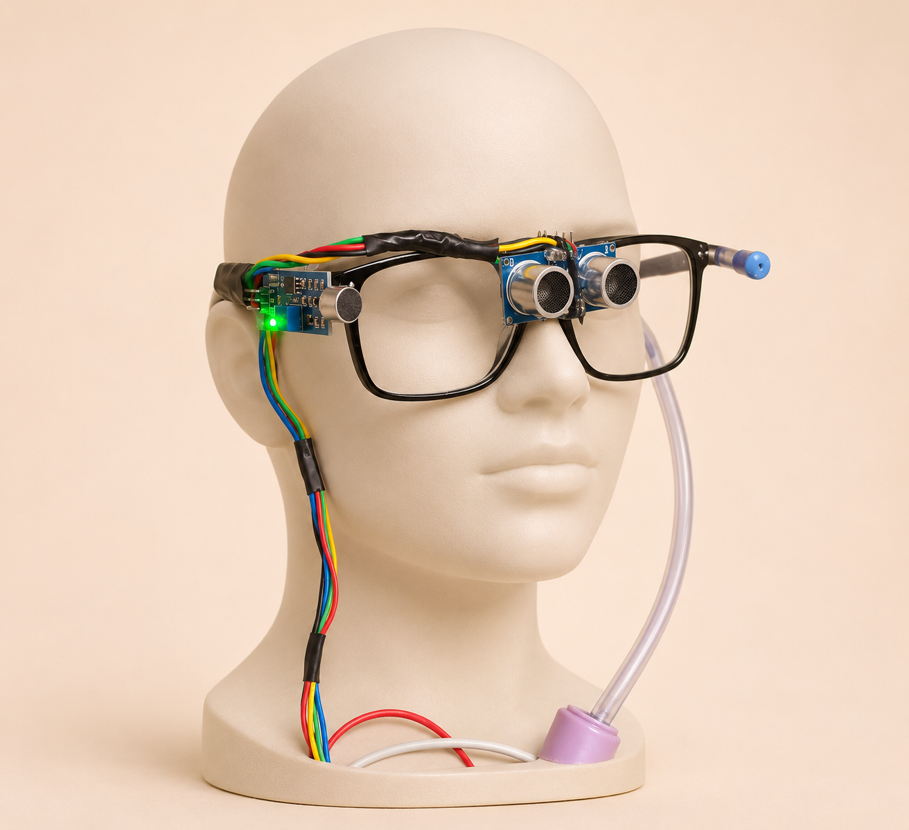
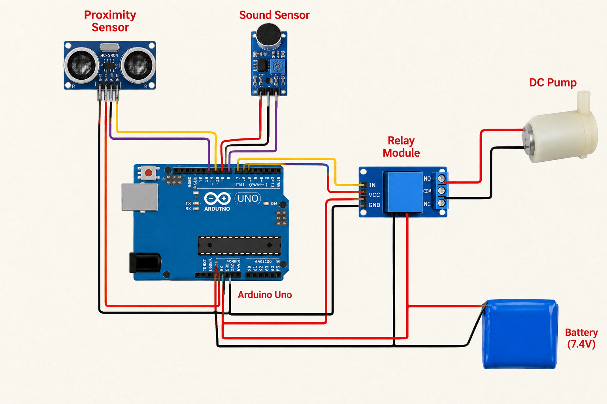
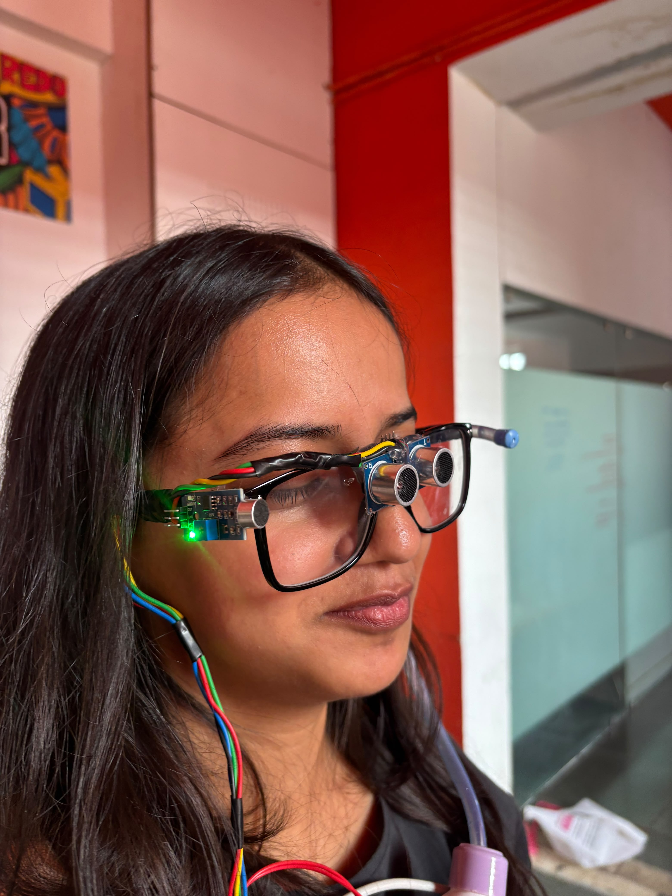
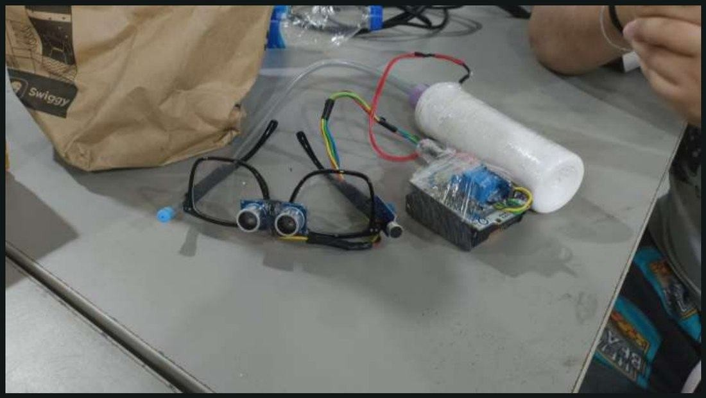
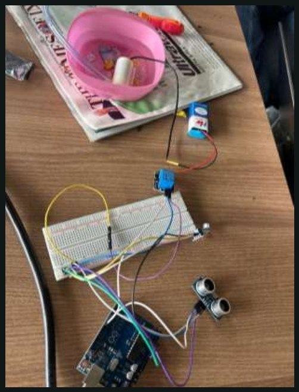
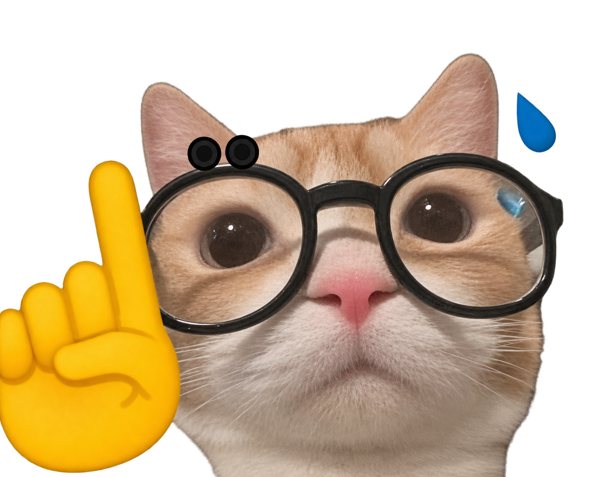
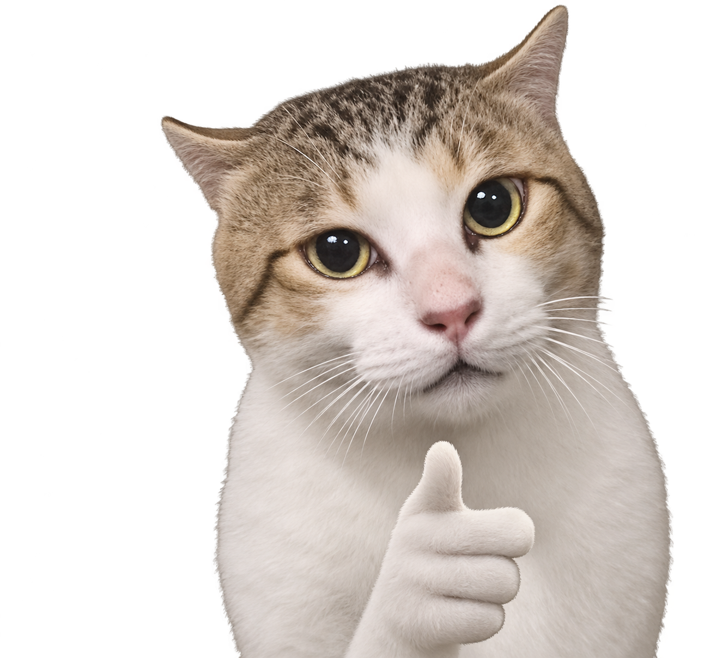

The question
How little does a device need to know to say “enough” for us?

Because “please leave me alone” can be difficult to say out loud. These glasses turn an invisible personal boundary into a very visible response.
How little does a device need to know to say “enough” for us?
Combine distance and sound sensing in an Arduino-powered wearable, without recording or interpreting speech.
A working glasses prototype that activates a pump when both limits are crossed, raising questions about automated refusal.
The brief explores unattended speech: a machine registers that speech happened, but does nothing with its content. The device detects sound without recording, transcribing or interpreting what is said.
Our adaptation adds a wearable form, proximity sensing and a physical refusal. Even a compliment can trigger the response: the device knows a limit was crossed, not what the encounter means.
Proxemics is the study of how we use space to communicate. Anthropologist Edward T. Hall described four zones of interpersonal distance, from intimate encounters to public settings. These distances offer a lens for understanding an encounter, rather than a universal rule: comfort depends on culture, context and relationships.
The space of familiar conversation. Who is approaching matters as much as how close they stand.
From theory to prototype. The glasses translate a flexible social boundary into a simple distance-and-sound rule. That mismatch is the point: a sensor can measure closeness, but cannot know whether it is welcome.
Glasses place the response where a conversation happens.
Proximity narrows the trigger to an encounter nearby.
A splash makes the invisible boundary suddenly visible.
Makes the decision.
Measures sound level.
Measures distance.
Switches and sprays.

INSIDE THE PROTOTYPE
Measures proximity.
Select a component to see its role in the circuit.



Distance and sound must cross their limits together. Explore the decision below; this is a conceptual simulation, not calibrated sensor data.

not today.
…okay, noted.One encounter should produce one response, rather than continuous spraying.
The wearer delegates the act, but still owns the encounter. An object can refuse for us; it cannot take responsibility for us.
It hears. It does not understand. How much judgement should we hand to a machine that only knows when a limit has been crossed?